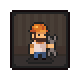
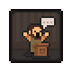
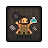
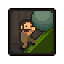
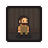
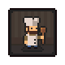
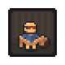
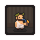

Perks
Perks are permanent modifiers that improve character skills and unlock passive enhancements.
Tech Tree Perks
Perks unlocked through the different Tech Trees using Technology Points.
| Anatomy and Alchemy (Tech Tree) | |||||
|---|---|---|---|---|---|
| Icon | Name | Description | Source | Notes | Tech Points |

|
Butcher | You know how to work with meat. You have a less chance of making a surgical error when extracting hardspares and softspares. | Technology: Gentle Butcher | Eliminates the possibility of creating a surgical error when extracting Blood, Fat, Skull, Bone or Skin only on a TIER 2 Preparation place. | |

|
Surgeon | The dead won't sue you, but still you need to be careful. You have a reduced chance of making a surgical error when extracting important parts. | Technology: Surgery | Eliminates the chance to create a surgical error when extracting Brain, Heart or Intestine only on a TIER 2 Preparation place. | |

|
Scientist | You've inhaled a lot of fumes during your experiments. You've developed an inner voice that helps you measure ingredients. You will produce one extra reagent from any material. | Technology: Master of Alchemy | Decomposing items at the Alchemy mill, Hand mixer, Distillation cube, or Distillation cube II yields +1 reagent. | |

|
Cultist | Everything has a meaning. You can see |
Technology: Cultist Available after the Dark Bodies technology is revealed in the Inquisitor questline. |
Shows what |
|
| Theology (Tech Tree) | |||||
| Icon | Name | Description | Source | Notes | Tech Points |

|
Cardinal | The church is not only a triumph of the spirit. It's also a number of buildings and properties. You've learned how to manage them, so ceremonies give you extra money. | Technology: Price of Faith | Receive (From |
|
| Book Writing (Tech Tree) | |||||
| Icon | Name | Description | Source | Notes | Tech Points |

|
Journalist | You notice the little things about people. Put these things together and you have a story. Sometimes you can get a story from dialog. | Technology: Journalist Can also be obtained (for free) from Vagner in the Ms. Charm questline. |
You always get a story when completing a quest (or step of a quest) with an NPC. | |

|
Writer | You know how to put words together. Sometimes you even manage to write a good sentence. Mother would be proud. | Technology: Writing Tricks | Improves the by 0.3 when crafting stories, notes, chapters, and most sermons. [When crafting a Book this does not apply] |
|

|
Playwright | You write good books. Actually you find you can just write down anything you remember from modern culture. | Technology: Playwright | Improves by 0.5 when crafting stories, notes, chapters, and most sermons. [When crafting a Book this does not apply] |
|
| Farming and Nature (Tech Tree) | |||||
| Icon | Name | Description | Source | Notes | Tech Points |

|
Master Gatherer | You love nature and nature loves you back. You can gather more resources from small plants. | Technology: Master Gathering | Foraged plants yield is increased by +1. Applies to Red mushroom, Edible mushroom, Berry, etc. | |

|
Farmer | You aren't afraid of getting your hands dirty. You can select good seeds and harvest a better crop. | Technology: Gardening | Chance to grow higher crops from lower seeds at random.Percentage unconfirmed | |

|
Beekeeper | You've been bitten so many times that bees can't even damage you any more. So you have plenty of time to collect honey from the beehive. | Technology: Beefriend | Bees no longer hurt you when harvesting Bee hive. Receive double the Honey. Doesn't applie to Bee and Beeswax. | |

|
Wine Master | You like to drink alcohol-especially wine! Your hangover depends on the alcohol you drank. Moreover, all alcohol you make has a better quality. | Technology: Blending | Improves the by 0.8 when crafting red wine. Also you receive 20% more energy when drinking Red wine and Beer. | |
| Smithing (Tech Tree) | |||||
| Icon | Name | Description | Source | Notes | Tech Points |

|
Blacksmith | You like to work with red-hot iron. Hammering relaxes you. And when the work is done, you always manage to find time to make extra nails. | Technology: Inborn Blacksmith | Increases the yield of hardware products: +3 nails, +1 simple parts, +1 complex parts, and +2 steel parts. Also improves the by 0.1 when crafting complex steel chisels. |
|

|
Big Guy | It appears that if you work with iron a lot, you become big and strong. +1 damage +1 defense. This decryption is inaccurate. | Technology: Martial Skills | Increases all damage dealt by +2 and decrease all damage recieved by -2. | |

|
Fireman | The spurting flame charms you. You know how to increase productivity, and you can smelt more ore per load. | Technology: Rules of Burning | Unlocks a second iron ingot recipe. Produces 2x ingots from 2x at 4/5 the fuel in 5/6 the time. | |
 |
Engineer | You know how complex mechanisms work. All the details of your work are top quality. Even your carving and jewelry look cleaner. | Technology: Engineer | Improves the by 0.3 when crafting carved marble, carved wood, and complex steel chisels. | |

|
Sword master | You know how to use your blade! You inflict additional damage and probably look cool with your sword. | Technology: Sword Master | Increases weapon damage by +5. | |
| Building (Tech Tree) | |||||
| Icon | Name | Description | Source | Notes | Tech Points |

|
Axeman | You know how to use an axe. Chopping a small tree can now give you an additional log. Also you can make more firewood and wedges from log chunks. | Technology: Woodcutter | Provides an additional log from small trees and stumps. Crafting firewood yealds +5 when splitting billets at the chopping spot. | |

|
Miner | You are a true miner. You find precious metals and gems more often but it's still a matter of luck and energy. | Technology: Scent of Gold | Find rare resources more often when mining. | |

|
Carpenter | You know how to deal with wood! Circular Saws are more productive in your hands. | Technology: Tricks of the Trade | The Circular saw will produce more products: +1 billet, +2 flitch, +1 plank, +1 beam. Also improves the by 0.5 when crafting carved wood. |
|

|
Mason | Stones are your passion, so your stone carving is really good. Also your so efficient you get and extra piece of stone from a big rock. | Technology: Tricks of the Trade | Increases the yield of stone pieces from a stone bricks at stone cutters by +2. Does not impact stone outcroppings. Improves the by 0.5 when crafting carved marble. | |

|
Jeweler | You have a nose for gems, so you will find them more often. Also, you know how to make really nice jewelry. | Technology: Best Friend | Increases the yield by +1 from precious metal veins found in the Dungeon. Also improves the by 0.7 when crafting books. |
|

Progression Perks
Perks gained through the progression of Quests within the game.
| Fix the Graveyard | |||||
|---|---|---|---|---|---|
| Icon | Name | Description | Source | Notes | Tech Tree |

|
Preacher | Bishop told you that now you can arrange a church service. So there you go! | Obtained when talking to Bishop after you reach |
Can access the Church allowing you to hold sermons and access the Alchemy Laboratory. | Theology |

|
Curious Mind | You go deeper. Find out the essence of things. Studying an item has a chance of giving you a story. | Obtained after you hold your first Sermon with Bishop in the reopened Church. | Stories will occasionally drop after studying something in the Study Table | Book Writing |
| Beatrice's Offer | |||||
|---|---|---|---|---|---|
| Icon | Name | Description | Source | Notes | Tech Tree |
 |
Eloquence | A note in the Church made you more vigilant and careful, and your prayers more sincere. From now on, you'll be gathering more Faith. | Obtained after reading the Note from unknown which drops from the Donation box at the next Sermon when betraying Lady Beatrice AND sending the Refugees away. | Increases the amount of Faith you receive from sermons. Appears to be about +30%[untested] | Theology |
 |
Industriousness | Any work develops you, even the work of evil. You've accepted your dark side, and it's enabled you to craft more effectively. | When helping Lady Beatrice. Obtained after reading the Note from unknown which you get when interacting with one of the new corpses you find at the morgue. | Increases the of all craftable items by 0.2. | Smithing |
 |
Persistence | Despite all the danger and risk, you courageously faced down your enemies - and won! Your backbone has gotten firmer, and now restores more energy. | Obtained after talking to Master Alaric when keeping the Refugees safe. | Your |
Smithing |


Unimplemented
| Perks | ||||
|---|---|---|---|---|
| Icon | Name | Description | Source | Notes |
 |
Blabla | Not Obtainable | Likely a "missing asset", testing or placeholder perk. | |

|
Brewer | Not Obtainable | The equivalent to the Wine Master perk but for beer. This was dropped because brewing beer doesn't require a person's input. | |
 |
Cook | Not Obtainable | Likely a past idea for a food increasing perk. | |

|
Master Potter | Not Obtainable | Unknown. | |

|
Natural Writer | Not Obtainable | Likely past version of the Wrighter perk. | |

|
Naturalist | Not Obtainable | Likely past version of the Master Gatherer perk. | |
 |
Skinner | Not Obtainable | Graveyard keeper once had an idea for animal ownership. This was dropped for
gathering skin from bodies and buying animal by-products from the village. | |
 |
Wine Master 2 | Not Obtainable | Likely a better version of the Wine Master perk which was dropped for unknown reasons. | |
| Writer Thief | Not Obtainable | Likely past version of the Playwright perk. | ||